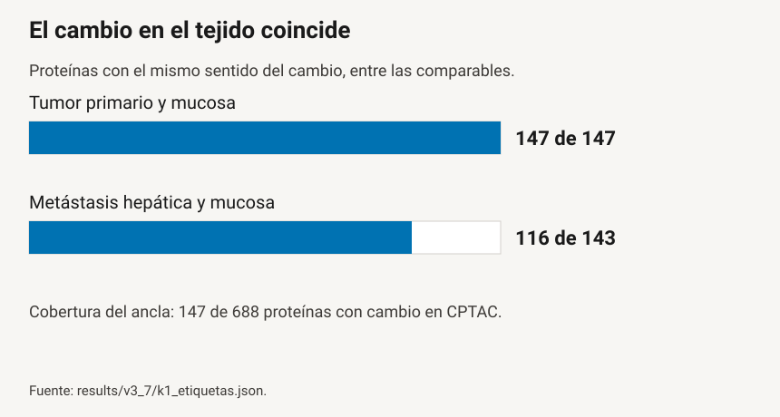
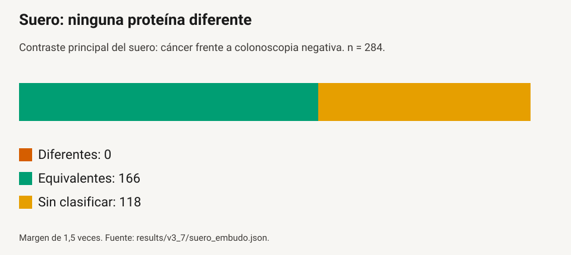
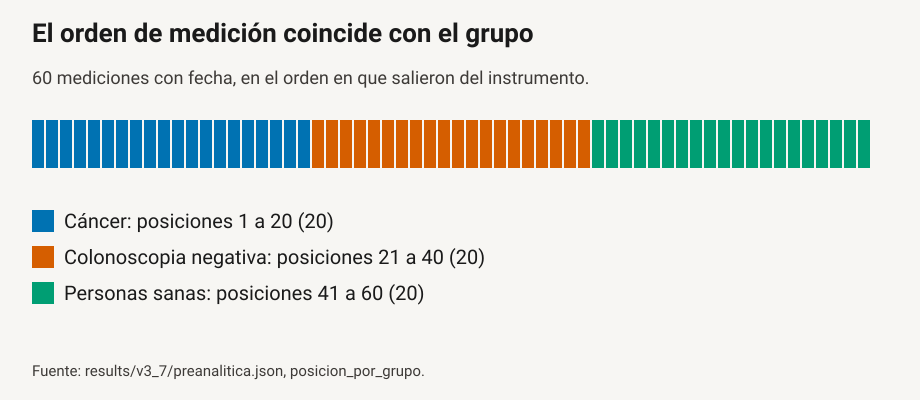
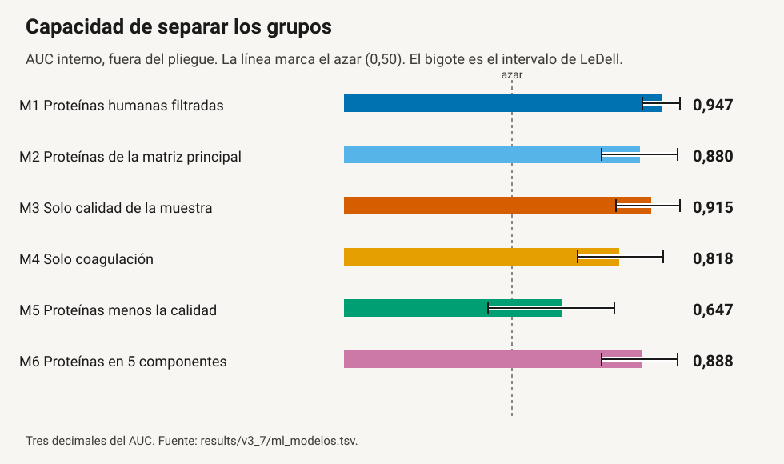

Un flujo reproducible para proteómica pública. El caso es el cáncer colorrectal.
Lo que muestran las gráficas
Cada figura la escribe scripts/web/figuras_sitio.py a partir de results/v3_7. Las etiquetas de AUCÁrea bajo la curva ROC. 0,50 es el azar. Un 0,88 significa que, en el 88 % de las parejas cáncer–colonoscopia negativa, el modelo ordenó bien a las dos personas. Aquí es un cálculo interno. usan tres decimales; el valor de la tabla queda en la descripción de la figura. La corrida sellada va del 11 de noviembre de 2026, 00:48:45 a 01:04:00 UTC, con certificado publicable.
Tejido

En las proteínas que se pueden comparar, el tumor primario y la mucosa cambian en el mismo sentido en los dos estudios. La metástasis hepática coincide en 116 de 143.
No dice que todas las proteínas del tumor de CPTAC estén en el segundo estudio: solo 147 de 688. Tampoco dice que el tamaño del cambio sea el mismo, solo el sentido.
Suero

Ninguna de las 284 proteínas del contraste principal fue diferente entre cáncer y colonoscopia negativa. 166 son compatibles con un cambio menor de 1,5 veces. 118 no alcanzan para decidir.
No demuestra que no exista una diferencia pequeña. Con veinte personas por grupo, un cambio grande es lo que el estudio podía descartar.

Las 60 mediciones salieron en tres bloques seguidos: primero el cáncer, después la colonoscopia negativa y al final las personas sanas.
No se puede separar el efecto de la enfermedad del efecto del momento en que se midió la muestra. El orden, por sí solo, distingue cáncer de colonoscopia negativa.

Las proteínas separan los grupos dentro del mismo estudio, y las variables de calidad, solas, los separan tanto o más. Cuando se descuenta esa calidad, la barra queda cerca del azar y su prueba de permutación no lo supera.
No es la exactitud de un examen ni una validaciónComprobar el hallazgo en otras personas, de otro centro. Eso no se hizo. La validación cruzada de los modelos solo reordena las mismas 40 muestras de cáncer y colonoscopia negativa. en otro hospital. No atribuye la separación al tumor.
Suero por estadio
La lectura de estadio IV frente a estadios I–II quedó sin evaluar: en el universo de la prueba no hubo proteínas tumorales epiteliales suficientes (el archivo h8_carga_tumoral.json marca el estado como no evaluable). No aporta un marcador de carga tumoral en sangre.
Fase exploratoria del desarrollo de biomarcadores. No se propone una prueba de sangre.